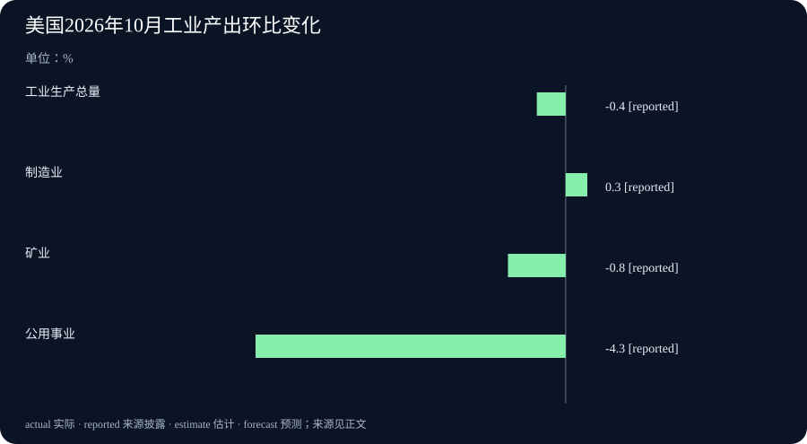

Daily Intelligence · 2026-11-18
信息边界 研究截止于北京时间 2026 年 11 月 18 日 09:24:07，优先追踪此前 24 小时公开的一手材料。四项主线的原页均标注 11 月 17 日；页面未披露精确时刻的，本文不声称已核实其小时级窗口。
Today's Thesis
微软把两类专用人工智能模型放进现有产品：一个帮助安全团队寻找漏洞和调查威胁，另一个帮助开发人员修改和理解代码。两份美国官方统计同时提示，10 月消费者继续增加支出，但工厂总产出回落。它们共同说明，技术能力和总量数据都要落到具体工作、具体行业和实际使用条件上才有意义。
Executive Summary
微软 11 月 17 日发布 MAI Cyber 2 Flash。这是一种面向网络安全工作的模型，可协助发现软件漏洞、提出修复建议和调查威胁。微软说，它将从 12 月中旬起在符合条件的自家安全产品中替换现有模型；评测和费用比较来自特定任务与配置，不能直接等同于每个企业的实际效果。 微软公告
同日，微软发布 MAI Code 2 和较轻量的 Code 2 Flash，分别面向较复杂的代码修改与高频的小改动。两者已进入 GitHub Copilot；Code 2 Flash 在 Microsoft Foundry 是限量预览。公司给出的性能和价格比较依赖特定基准、推理设置和促销价。 微软公告
美国人口普查局说，10 月零售和餐饮服务销售额为 7,482 亿美元，环比增长 0.2%、同比增长 6.8%。联邦储备委员会则说，10 月工业生产环比下降 0.4%，其中制造业增长 0.3%、公用事业下降 4.3%。零售额未扣除价格变化，工业生产是产量指标；两者不能当作同一个经济量相减。 人口普查局 联邦储备委员会
AI Daily
安全模型先解决哪类工作
微软将 MAI Cyber 2 Flash 定义为专用安全模型。它的目标是帮助安全团队持续查找漏洞、建议修复办法和调查威胁。专用模型是为一类任务专门训练或调整的模型，并不等于在所有问题上都更强。公告称，该模型基于微软的安全数据和经验，并将直接用于微软安全产品。 微软公告
公司在 CyberGym-E2E 评测中报告 92.3% 的任务成功率，并称这项比较的每项任务费用低于所列大型模型的 2%。该评测衡量漏洞发现任务，但评测结果不能替代客户环境的结果。微软同时披露，905 个任务中有 92 个与其部分训练材料使用了相同的开源项目和漏洞报告，因此报告时从所有模型结果中都排除了这 92 个任务。这个处理提高了比较的可解释性，也说明读者仍应关心自己的代码、工具权限和工作流程是否相同。 评测说明
模型的上下文窗口为一百万个词元。词元是模型处理文字和代码时使用的计量单位；窗口更大，表示一次可以带入更多文件，不表示每次都能找对问题。微软称该模型从 12 月中旬开始，在符合条件的客户中自动替换其安全产品里的现有模型。实际到达时间、产品覆盖范围和客户是否适用，仍应以登录后的产品说明为准。 微软公告
编程模型把复杂修改与高频小改动分开
MAI Code 2 面向把代码推向可运行版本、排错、多文件修改和理解整个代码库等工作。MAI Code 2 Flash 则面向解释代码、做局部修改、处理常规修复和快速迭代。把两个模型分开，意味着团队可以按任务难度和频率选择工具，而不是默认把每个问题交给同一套高成本流程。 微软公告
微软称，在四项常用企业编程基准的平均结果中，MAI Code 2 达到所列对照模型 98% 的表现，费用为其 40%。这些是公司在最高推理设置、指定工具和指定基准下给出的比较；公告也明确说，模型尚未为基础科学研究和很长时间跨度的自主代理工作调优。这里的“推理设置”是模型为一次回答分配的计算方式，不是用户完成工作的全部时间。 方法说明
两款模型已在 GitHub Copilot 提供。Code 2 Flash 在 Microsoft Foundry 仍为限量访问预览，微软说还计划将它放到其他平台。已可使用、限量预览和计划上线是三个不同状态。团队采购或迁移时，应先确认自己所在的产品、地区和账号是否确实可用，再比较运行一次真实任务的人工复核和返工成本。 微软公告
Business Daily
美国零售额继续增长，但不是实际购买量
美国人口普查局 11 月 17 日发布的月度零售统计显示，10 月经季节调整后的零售和餐饮服务销售额为 7,482 亿美元，较 9 月增加 0.2%，较上年同月增加 6.8%。8 至 10 月累计销售额较上年同期增加 6.4%。这些数字是商家销售金额，不是扣除价格变化后的商品数量。 人口普查局月度发布
例如，一家商店卖出的商品数量不变而售价上升，销售额仍会增加。因此，这份数据适合观察顾客支付的总金额是否变化，却不能单独证明家庭买到了更多实物。人口普查局给出的环比误差范围为正负 0.4 个百分点，读者也应避免把 0.2% 的单月变化解读成精确无误的趋势。 人口普查局月度发布
Macro Observation
工业总量回落，行业表现并不一致
联邦储备委员会的 G.17 报告说，10 月工业生产环比下降 0.4%，此前 9 月增长 0.7%。工业生产主要衡量矿业、制造业和公用事业的实物产出。10 月制造业增长 0.3%，矿业下降 0.8%，公用事业下降 4.3%。因此，总量回落不代表每个工厂都减产。 联邦储备委员会 G.17
报告还显示，工业生产较一年前高 2.1%，产能利用率为 76.4%。产能利用率是已使用生产能力占估计可用能力的比例，不能当作企业利润率。该数值比长期平均低 3.0 个百分点。制造业内，商业设备产出增长 1.0%，消费品产出下降 0.7%。这些分项可以帮助追问是哪些行业在拉动或拖累总量，但不能仅凭一月数据断定原因。 联邦储备委员会 G.17
Signal Dashboard
| 观察对象 | 已确认的变化 | 下一份可比较的证据 |
|---|---|---|
| MAI Cyber 2 Flash | 微软公布安全专用模型和指定产品中的替换计划 | 客户环境的覆盖范围、人工复核量和事故处理结果 |
| MAI Code 2 | 两种面向不同编程任务的模型进入 Copilot | 同一代码库、同一通过标准下的完整任务成本 |
| 美国 10 月零售 | 销售金额环比增长 0.2%，未扣价格变化 | 价格与数量指标是否支持同一方向 |
| 美国 10 月工业 | 工业生产环比下降 0.4%，制造业仍增长 0.3% | 后续报告中行业分项和修订情况 |
Deep Insight
把“便宜”还原成完成一件工作的总成本
今天两份模型公告都强调成本。这个词很容易让人只盯着每百万词元或每项评测任务的报价，但企业实际付出的成本往往从模型之外开始。开发人员要准备材料、检查结果、处理模型没有发现的异常，还要在错误进入正式系统前修复它。安全团队尤其不能只看一次扫描的价格，因为漏掉一个重要问题的后果可能远高于多做几次检查。
微软对 MAI Cyber 2 Flash 的比较有一个值得保留的边界：它谈的是特定安全任务、特定评测和列出的费用口径。公司还剔除了与部分训练材料重合的 92 个任务。这不是说结论无效，而是告诉使用者比较必须保留同样的边界。安全团队可以挑选一组已经处理过、结果已知的内部案例，把允许模型读取的代码范围和可调用工具先写清楚。接着分别记录模型找到的问题、误报、人工确认所花时间和没有找到的问题。只有把这些环节合在一起，才能判断一个较低的模型报价是否真的降低了总成本。
编程工作也应这样比较。假设一个团队要修复十个已有测试的缺陷。它可以先规定：测试必须全部通过，改动要能被维护者读懂，遇到不确定的业务规则必须停下来提问。然后让两个模型在相同分支和相同权限下完成任务。若一个模型初次回答便宜，却频繁需要工程师重写，账单上没有显示的时间仍是成本。反过来，较高的模型费用也未必浪费，如果它少造成一次回滚或少占用一次资深工程师的时间。这里的重点不是宣称哪个模型一定更划算，而是把“划算”改成可重复核验的问题。
宏观数据提醒我们同样不要用一个总数代替全部情形。10 月零售额增长，是消费者支付金额的变化；其中同时可能包含价格、商品组合和购买数量的变化。工业总产出下降，也同时包含制造业、矿业和公用事业不同的方向。把零售额和工业生产放在同一天阅读，可以帮助读者避免一个常见误解：居民继续消费，并不自动意味着每个工业行业都增加产出；某个行业增加产出，也不自动说明所有家庭都多买了东西。
这套读法适合技术和经济新闻。第一步问指标到底数什么，第二步问比较发生在什么条件下，第三步问下一份什么证据能推翻或支持判断。对模型，下一份证据可以是相同任务的完整交付记录。对零售，下一份证据可以是价格和数量的补充统计。对工业，下一份证据可以是分行业的连续变化。把问题放在能被重复检查的位置，才不会把公告中的承诺、评测中的数字和现实中的结果混在一起。
Tomorrow Watch
留意微软产品页对安全模型替换范围的说明，尤其是哪些客户和哪些安全工作流已经可用。对于编程模型，先核对 GitHub Copilot 中的实际访问方式和 Code 2 Flash 的限量预览条件。若团队决定测试，先准备一组获准使用、已有正确答案的任务，避免为了试用而把敏感代码或资料交给不合适的工具。
经济方面，下一次阅读零售和工业数据时，把金额、产量和价格分开记录。若看到“增长”或“下降”，先问它是环比、同比还是某个调整后的口径。还应留意联邦储备委员会随后对工业生产数据的修订，不把 10 月一个月的行业变化写成长期结论。 人口普查局 联邦储备委员会
One Chart

图中比较 2026 年 10 月相对 9 月的环比变化，单位是百分比，来自联邦储备委员会的工业生产报告。工业生产总量下降 0.4%，制造业增长 0.3%，矿业下降 0.8%，公用事业下降 4.3%。reported 表示来源已披露的数字，不是预测。四项不是可以相加的同类产品：总量由各行业按官方方法汇总，行业的权重不同。公用事业的大幅下降也不等于所有工业部门都回落。 联邦储备委员会 G.17
Quote of the Day
“Our life is frittered away by detail. Simplify, simplify.”
我们的生活被细枝末节耗散。简化，再简化。
Jane Addams（简·亚当斯）在《二十年在赫尔馆》（Twenty Years at Hull-House，1910）第 7 章写下这句话。古腾堡计划的电子文本提供了可定位的原文。 《二十年在赫尔馆》原文
编辑解读 亚当斯讨论的是城市生活被琐事占满，不是在谈今天的模型或统计。面对一串性能和经济数字，也可以只留下能帮助读者作出决定、并且下次能核对的部分。
Action Items
- 安全模型要看什么结果？ 选一组已有处理结论的安全案例，先写明允许读取的资料、通过条件和人工复核步骤，再记录漏报与误报。
- 编程成本怎么算完整？ 把模型价格、测试失败后的返工、代码审查和上线后的修复时间放在同一张记录里比较。
- 零售增长代表什么？ 看到销售额变化时，同时找价格或数量指标，避免把支付金额直接当成购买数量。
- 工业下降由谁带来？ 对照制造业、矿业和公用事业的分项，先说明行业权重和统计口径，再讨论可能原因。
- 哪些数字值得保留？ 为每条新闻留下一项下一次能重复核对的证据，例如产品可用范围、测试结果或下一份官方统计。